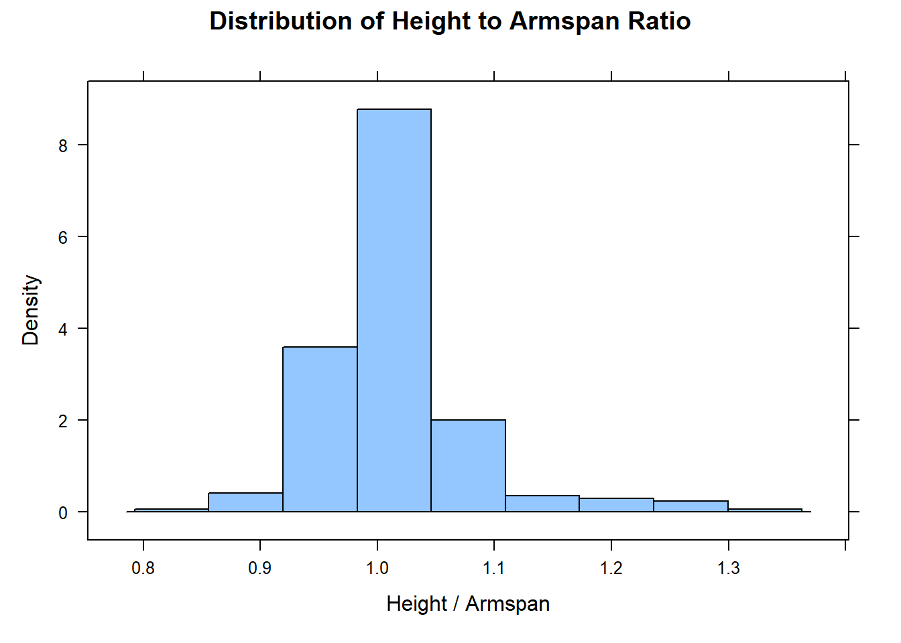

# Load libraries and data
library(rio)
library(mosaic)
library(tidyverse)
library(car)
survey <- import('https://github.com/byuistats/Math221D_Cannon/raw/master/Data/HighSchoolSeniors_subset.csv') %>% tibble()mutate()
Adding Columns
If we want to create a new column in our dataset, we use the tidy function, mutate(). Consider again the High School survey data with 60 columns and 312 respondents.
To create a new column, “pipe” the raw data into the mutate() statement. Inside the parentheses, give the new column a name and set it equal to what you want that column to be.
EXAMPLE: It is widely known that arm span is typically very close to one’s height. Let’s create a column of the ratio of Height (Height_cm) to armspan (Armspan_cm) and call the new column, ht_to_span. If common knowledge is correct, we would expect the ratio to be close to 1 on average.
clean <- survey %>%
mutate(ht_to_span = Height_cm / Armspan_cm)
mean(clean$ht_to_span)[1] InfNotice that the mean is Inf which means infinity, or undefined. This is likely due to R attempting to divide a number by zero, meaning someone answered that their arm span was zero. This is where filter() comes in handy. We can filter out the rows where Armspan_cm is 0:
clean <- survey %>%
filter(Armspan_cm > 0) %>%
mutate(ht_to_span = Height_cm / Armspan_cm)
histogram(clean$ht_to_span, xlab = "Height / Armspan", main = "Distribution of Height to Armspan Ratio")
It’s difficult to imagine someone who is 40 times taller than his or her arm span. But this is sufficient to illustrate the mutate() function.
EXAMPLE: Now let’s make a new column that converts Height_cm into inches:
clean <- survey %>%
mutate(ht_to_span = Height_cm / Armspan_cm,
Height_in = Height_cm / 2.54)
Combining Tidy Functions
Click to see
clean <- survey %>%
filter(Armspan_cm > 0) %>%
mutate(ht_to_span = Height_cm / Armspan_cm,
Height_in = Height_cm / 2.54) %>%
select(Height_cm, Armspan_cm, ht_to_span, Height_in) %>%
filter(ht_to_span < 1.5,
ht_to_span > .5)
clean# A tibble: 268 × 4
Height_cm Armspan_cm ht_to_span Height_in
<dbl> <dbl> <dbl> <dbl>
1 182 142 1.28 71.7
2 190 192 0.990 74.8
3 172 167 1.03 67.7
4 163 160 1.02 64.2
5 51 52 0.981 20.1
6 181 187 0.968 71.3
7 160 159 1.01 63.0
8 156 142. 1.10 61.4
9 169 162 1.04 66.5
10 160 160 1 63.0
# ℹ 258 more rowshistogram(clean$ht_to_span, xlab = "Height / Armspan", main = "Distribution of Height to Armspan Ratio")
I decided on 1.5 and .5 as the filter values by trial and error. There are better ways to determine outliers. But I suspect it is rare indeed for someone to be 50% taller than their armspan or 50% shorter.